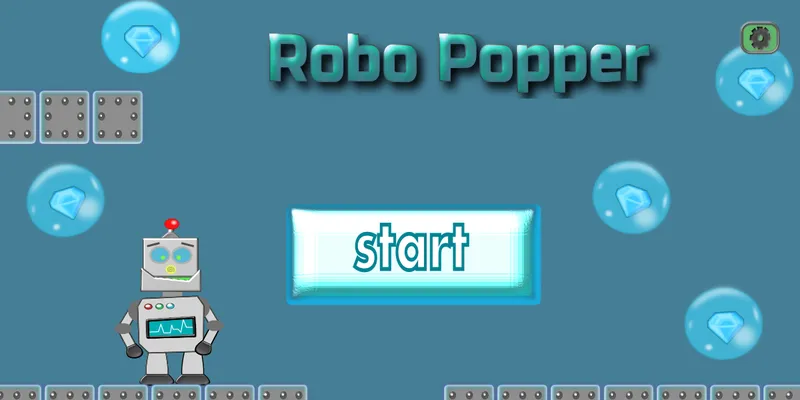
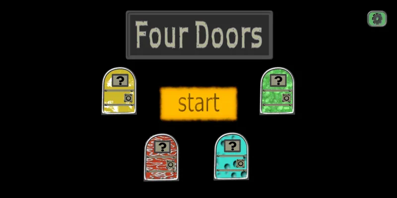
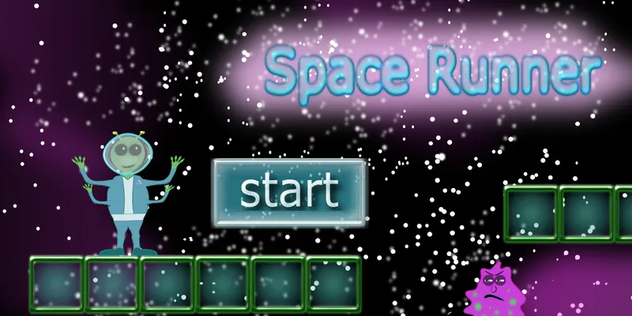
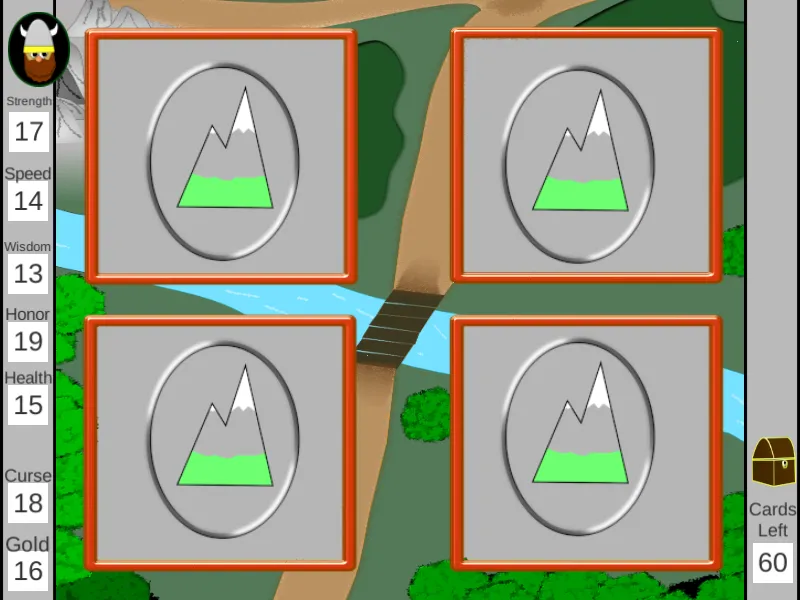
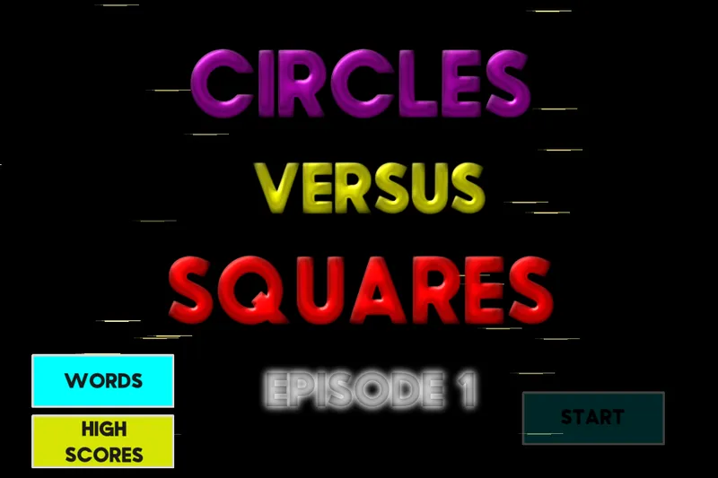
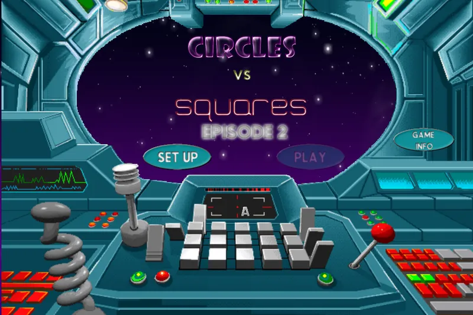
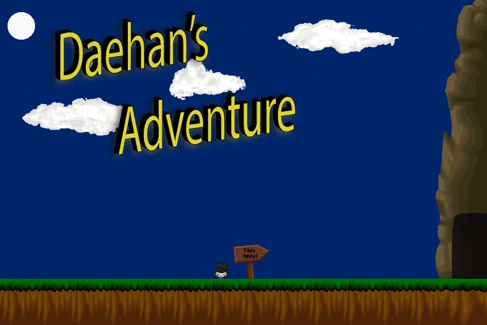
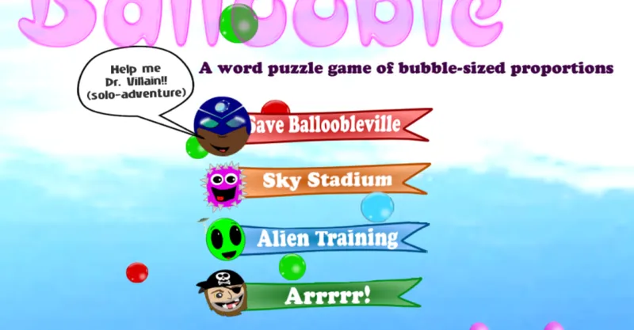

Robo Popper
Phaser (JavaScript), 2017
Letter bubbles bounce around the screen; pop them in the order that spells the word for the most points. Teachers can enter their own word list with the settings button.
Play Robo PopperI started making games in 2013 for my own English classes, and most of these were built to be set up by a teacher and played by a room full of students.
I began with Multimedia Fusion 2, moved to Unity and C# in 2015, and to Phaser and JavaScript in 2017.

Phaser (JavaScript), 2017
Letter bubbles bounce around the screen; pop them in the order that spells the word for the most points. Teachers can enter their own word list with the settings button.
Play Robo Popper
Phaser (JavaScript), 2017
A digital board game for the classroom. Students pick a fantasy character, explore the board, fight monsters and collect treasure, earning gold by answering review questions. Teachers type their vocabulary and expressions into the setup menu, and the game makes the questions. The character with the most gold, strength and health wins.
Play Four Doors
Phaser (JavaScript), unfinished
An endless runner: gather supplies for your ship by collecting as much space debris as you can. I stopped partway through, so it's a work in progress.
Play Space Runner
Unity (C#), early demo
You're an adventurer struck by a curse with a will of its own. It grows stronger as you do, and gives you advantages, but if it grows too strong it takes you over and you lose. An early demo of the basic systems; it wasn't made for the browser, so expect a few glitches.
Play Cursed Shadows
Multimedia Fusion 2 (Flash)
A five-level platformer for the classroom. The teacher enters vocabulary words first; students unscramble them to unlock each level.
Play Circles vs Squares
Multimedia Fusion 2 (Flash)
Hangman aboard a spaceship. Use Set up to enter the words for your class, then Play.
Play Circles vs Squares 2
Multimedia Fusion 2 (Flash)
A side-scrolling adventure built around review questions. On the input screen, select the sample questions, then press F1 on your keyboard to start.
Play Daehan's Adventure
Unity (C#), 2016
A word puzzle game of bubble-sized proportions, and my first published game: it was on Google Play from 2016 until I retired it. Making it was how I learned to code.
No longer availableThe three Multimedia Fusion games were made for Flash, which browsers stopped playing in 2021. They run here through Ruffle, a free Flash player that works inside the browser. Games play best on a computer with a keyboard and mouse.